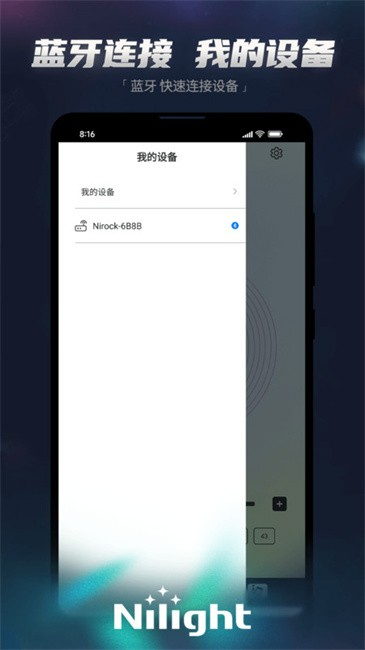

越野夜路被自己灯带坑过之后，我终于把 Nilight 调明白了
一场周末夜穿让我意识到车底那串 LED 灯带不是装完就完事儿的——从蓝牙配对到灵敏度调节、定时自动亮，这些细节直接决定你是享受氛围还是浪费钱。
那个伸手看不见脚的瞬间
上个周末约了几个哥们去山里面越野夜穿。出发前我特意提前了两天，把去年双十一买的那套 Nilight 底盘灯带翻出来重新贴了一遍。前保险杠、左右侧裙、后包围底缘一整条，粘得比手机贴膜还仔细。想着到了山沟沟里一开，脚下那圈蓝紫色流水灯一滚，全车人都得哇一声。
结果你猜怎么着。
天刚擦黑进山，在一个交叉路口停下来等后面那辆切诺基，我随手开了灯带——没反应。再按遥控器——还是黑的。那个瞬间真的尴尬，山里面黑得伸手不见五指，只有对面切诺基的远光照过来，把我贴在侧裙上那根灯带照得一清二白，像个被撕掉发光皮肤的荧光棒。
我掏出手机，点开 Nilight App。界面出来了，但蓝牙列表是空的。控制器没通电？不可能啊，前天刚接的 ACC 线，打火的时候还亮了一下。手机蓝牙没开？下拉通知栏一看，开着的。
就这么在山路上蹲了十分钟，旁边哥们递过来一根烟，我没接，盯着手机屏幕里那个转圈的蓝牙扫描动画，感觉那一圈小光点就是在嘲笑我。

原来不是它坏了，是我没给它权限
最后是同行的另一个哥们过来帮我看了一眼："你这 App 的麦克风权限给了吗？"
麦克风？灯带控制器跟麦克风有什么关系？
他拿过我手机，进系统设置翻到应用权限管理，点开 Nilight 那一项——麦克风和蓝牙两个权限，都勾着"禁止"。
"很多新手机默认不给 App 蓝牙权限，你第一次打开的时候没注意就点了拒绝吧？"
还真有可能。前几天装完之后我随手就划过去了哪。允许之后重新打开 App，这次扫描只用了两秒，列表里跳出来一个名字：Nirock-68BB。点一下，蓝色对勾亮起，灯带"唰"地一下全亮了。
说实话那个瞬间我真的有种"原来不是东西不好是我不会用"的挫败感。这灯带买了快一年了，我之前就只拿遥控器开开关关，从来没好好打开 App 看过。早知道能在手机上调，谁还去摸那个五米外就要失灵的遥控器啊。
灵敏度调到多少，取决于你在什么地方开
从山里回来之后我就开始琢磨这 App 到底还有啥玩意儿，后来去Nilight官网翻了一下功能列表，原来我之前只用到了最表面的一层。光是能亮起来不够，得让它好用。
最先让我觉得"原来还能这样"的是麦克风模式。
App 面板上有个麦克风图标，点开之后灯带颜色会跟着周围的声音变化——音量大的时候颜色跑得快、亮度高，安静的时候就维持一个柔和的慢循环。听起来很酷对吧？但我第一次开的时候，发现一个问题：发动机正常运转的声音它也在跟着瞎跑，搞得跟在迪厅门口停着似的。
去Nilight文档翻了一下才发现有个灵敏度滑块，显示一个百分比数字。我之前默认用的是中间值，大概 45 左右，但我的越野车排气本来就吵，45 这个阈值对它来说等于一直处在"大响声触发"的范围里。
我往低了调，调到 28，熄火再开。这次安静了——发动机平稳运转的时候灯带维持在一种缓慢的蓝色渐变，只有我按一下喇叭或者哥们拍一下机盖这种大动静，颜色才"唰"地一下跳起来。
后来又试了几种场景：平时在市区开，调在 35 左右，正常说话声能触发，车流噪音又不会瞎晃；去车库参加车聚的时候直接拉到 60，周围人说话、播放音乐的节奏全能带起来，底盘那一圈光跟着节奏跳；但有一次忘了调回来直接开进高速，风噪胎噪全触发，那一小时我看灯都看成花了。
定时开关这个功能，我之前完全不知道存在
调完灵敏度之后我又翻了翻设置，然后看到了定时开关——v1.2.0 版本新增的功能，我手机上那个 App 之前一直没更，压根不知道有这事儿，去官方下载把最新版装上才看到的。
设了个夜间的计划：晚上 9 点自动开，凌晨 1 点自动关，只在工作日生效。这样晚上下班进车库，车灯还没熄，底盘那圈灯已经亮起来了。上周三那天加班到十点多，推开车门的时候脚底下那一圈暖黄色的渐变刚好在那儿，瞬间觉得加班也没那么苦。
但这个功能有个明显的局限——它不是灯带控制器自己在计时，是手机 App 在本地触发。我试过有一次把 App 强行杀掉之后下班，到了车库发现灯没开。还有一次手机蓝牙没连上控制器（可能是信号弱），定时也没触发。所以它是个"锦上添花"的功能，不能当主力用。
不过对我来说足够了。大部分时候我手机就在方向盘旁边的支架上，蓝牙一直连着，定时就正常工作。真出问题的时候掏出来手动开一下也不费事儿。
颜色为什么总是"看起来不够顺"
有个问题我之前一直没太在意——追逐效果跑起来的时候，颜色过渡总觉得有点细碎，不是那种丝滑的流动感，像是一颗颗 LED 在跳而不是光在流。
翻到高级 RGB 参数那页才搞明白，有个叫"颜色通道宽"的东西，默认值是 2，但我的灯带 LED 珠密度比较高，默认值就显得每个颜色段太短太碎。
调到 5 再开，追逐效果跑起来就不一样了——颜色块拉长了，过渡的范围变宽，从红色到橙色再到黄色是慢慢漫过去的，不再是一格一格跳。配合亮度上限从 100% 降到 85%，长时间开着也不会感觉底盘发热，视觉上也更舒服。
顺便还改了运动方向，默认是从前往后跑，但我灯带的安装方向反过来了，所以每次都觉得追逐效果是"往回跑"的感觉，改过来之后就顺了。
写在最后
折腾了这一晚上下来，我发现其实不是灯带功能少，是我之前只用到了最基础的那一层——遥控器开开关关。
从蓝牙配对的权限问题，到灵敏度调多少才合适，再到定时自动亮和高级 RGB 参数，这些东西每一样单独看都不是什么惊天动地的功能，但凑在一起，才让这串灯带从"有亮就行"变成了一个真正能根据你的使用习惯来适配的东西。
你说值不值得我蹲在山路上抽那半小时烟？我觉得值。至少下次再去夜穿的时候，哥们的切诺基跟着我的尾灯进山洞，我可以稳稳当当把灯带调在 40 灵敏度、蓝色慢速渐变，让他在后面追着那圈光跑，而不是反过来。
顺便提一句，这套灯带的资料在GitHub、Gitee、GitCode 三个仓库都有备份，不管你习惯用哪个平台查资料都方便，多一份入口总不是坏事。